25+ Easy Christmas Crockpot Recipes
📌 Save to Pinterest
Christmas dinner does not need an oven full of dishes and a cook stuck at the stove. This roundup gathers twenty-five easy Christmas crockpot recipes — slow cooker mains, soups, sides and desserts that cook themselves while you decorate the tree, wrap gifts or welcome guests. Load the slow cooker in the morning, set it to low, and come back to a holiday table that is ready when you are.
How to plan a hands-off Christmas dinner
Start with one showpiece main — a glazed ham, a turkey breast or a brisket — and let the slow cooker hold it warm until serving time. Add a soup that simmers all day, one or two sides that free up the oven, and a dessert that sets while you eat dinner. If you are feeding a crowd, pick recipes that hold well on warm, like soups, braised meats and mashed vegetables, and set out the sides buffet-style so everyone serves themselves. And if you only have one slow cooker, cook the main first and keep it warm in the oven while a soup or side takes its turn.
Good to know: Everything is written in American English, and measurements use US customary units — cups, tablespoons, and Fahrenheit — for cooks in the United States. Always follow safe food-handling guidance, and check labels for allergens when cooking for others.
Food safety: cook poultry to 165°F (74°C), ground meat and sausage to 160°F (71°C), and whole cuts of beef, pork and lamb to 145°F (63°C) with a 3-minute rest. Cook fish to 145°F (63°C) and shrimp until opaque. Never cook frozen meat in a slow cooker — thaw it first — and keep the lid on while cooking so the slow cooker stays hot enough. Refrigerate leftovers promptly. Check with a food thermometer.
Mains for the holiday table
The centerpieces — glazed ham, turkey breast, brisket, lamb and more, all cooked low and slow.
1. Slow Cooker Cranberry Glazed Ham
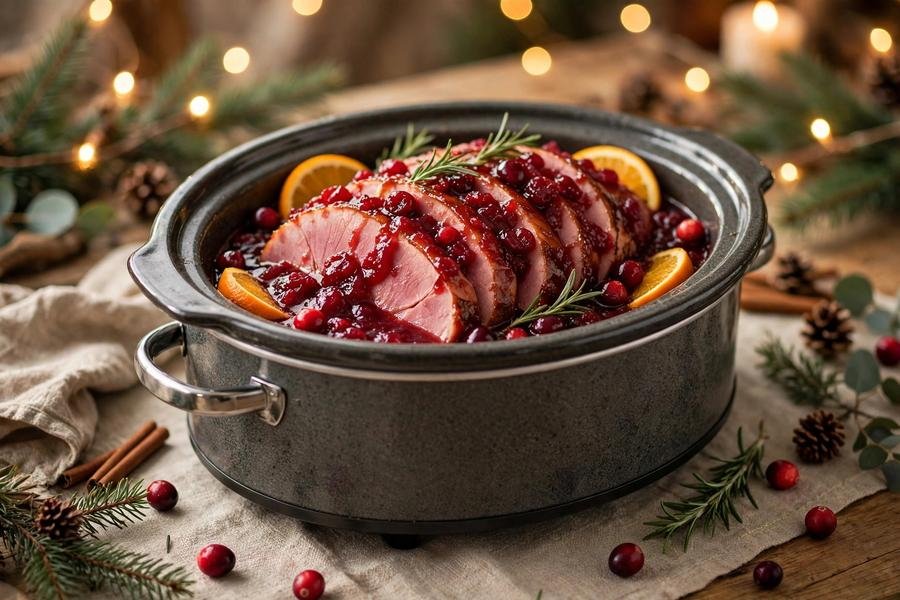
A spiral ham slow-cooks in a sweet-tart glaze of cranberry sauce, brown sugar, Dijon mustard, and orange zest, with whole cloves studded into the scored meat for warm spice. The glaze soaks into every slice as it bastes, keeping the ham juicy and glossy. It is a hands-off centerpiece that frees the oven and looks beautiful on the Christmas table.
Ingredients
- 1 spiral ham (7 lbs)
- 1 can (14 oz) cranberry sauce
- 1/2 cup brown sugar
- 2 tbsp Dijon mustard
- 1 tsp orange zest
- whole cloves
Directions
- In a medium bowl, stir together the cranberry sauce, brown sugar, Dijon mustard, and orange zest until smooth and evenly combined.
- Set the ham on a cutting board and score the surface in a shallow diamond pattern, cutting just through the outer layer so the glaze can seep in.
- Press whole cloves into the ham at the corners of the scored diamonds, spacing them evenly.
- Place the ham in the slow cooker and pour the glaze evenly over the top, letting it run down between the slices.
- Cover and cook on low for 4 hours, keeping the lid on so the slow cooker stays hot.
- Baste the ham twice, spooning the warm glaze from the bottom of the pot over the top.
- Lift the ham onto a platter, rest 10 minutes, then slice along the spiral cuts and serve with the warm glaze spooned over each portion.
Food safety: reheat the cooked ham to 140°F (60°C).
2. Slow Cooker Turkey Breast with Herb Butter
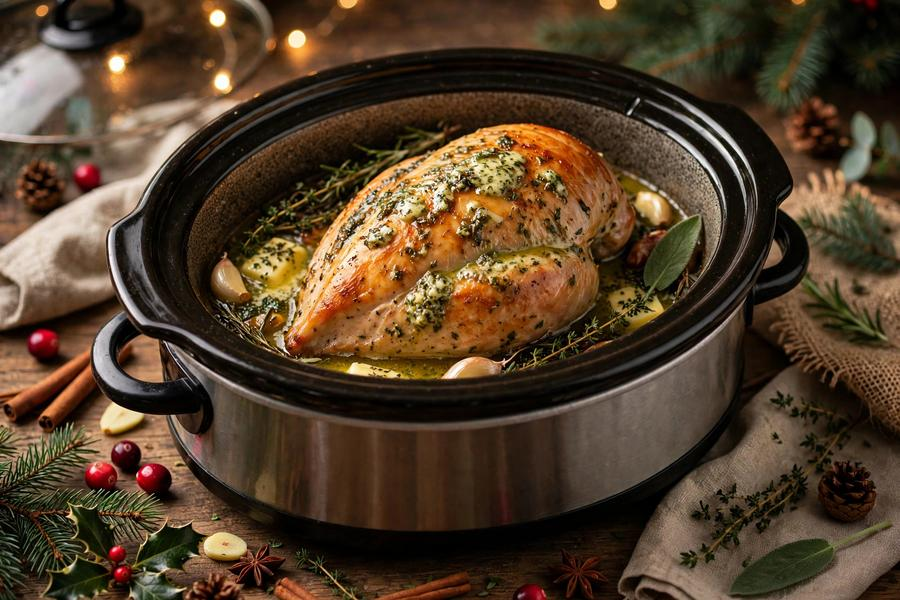
A bone-in turkey breast cooks low and slow under a rich herb butter of garlic, rosemary, and thyme, resting on lemon halves that steam the meat and perfume it from below. The skin turns golden and the meat stays juicy, with none of the oven-watching a whole bird demands. It is the perfect smaller holiday centerpiece for a Christmas dinner.
Ingredients
- 1 bone-in turkey breast (5 lbs)
- 4 tbsp butter
- 3 garlic cloves
- 1 tbsp chopped rosemary
- 1 tbsp thyme
- 1 lemon
- salt and pepper
Directions
- Soften the butter for about 15 minutes, then mash it in a small bowl with the minced garlic, chopped rosemary, and thyme until evenly mixed.
- Pat the turkey breast dry with paper towels and season it generously all over with salt and pepper.
- Loosen the skin over the breast with your fingers, without tearing it, and spread about half of the herb butter onto the meat underneath.
- Rub the remaining herb butter all over the outside of the skin.
- Cut the lemon in half and place the halves cut side down in the bottom of the slow cooker, then set the turkey breast on top of them.
- Cover and cook on low for 5 hours, until the meat is tender and the juices run clear.
- Transfer the breast to a cutting board, tent it loosely with foil, and rest for 15 minutes before slicing and serving.
Food safety: cook the turkey to 165°F (74°C) — check with a food thermometer.
3. Slow Cooker Beef Brisket with Cranberry Barbecue Sauce
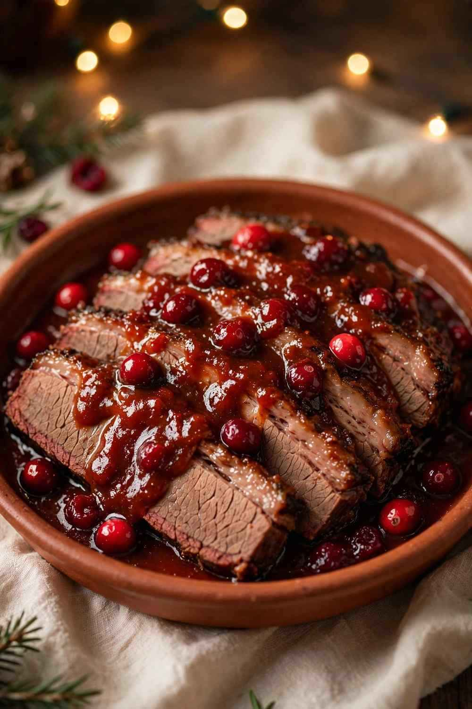
Beef brisket braises for hours in a sauce of barbecue sauce, cranberry sauce, brown sugar, onion, garlic, and smoked paprika until it turns meltingly tender. The cranberry adds a sweet-tart brightness that cuts the richness of the beef, and the sauce thickens into a glossy glaze. Slice it against the grain and spoon the sauce over for a holiday main.
Ingredients
- 1 beef brisket (4 lbs)
- 1 cup barbecue sauce
- 1 can (14 oz) cranberry sauce
- 2 tbsp brown sugar
- 1 onion
- 2 garlic cloves
- 1 tsp smoked paprika
Directions
- Dice the onion, mince the garlic, and stir them in a bowl with the barbecue sauce, cranberry sauce, brown sugar, and smoked paprika until combined.
- Pat the brisket dry with paper towels and season it lightly with salt and pepper on all sides.
- Place the brisket in the slow cooker and pour the sauce evenly over the top, letting it run down the sides.
- Cover and cook on low for 8 hours, until the brisket is very tender and yields easily when pressed with a fork.
- Lift the brisket onto a cutting board and rest for 10 to 15 minutes so the juices settle and the meat slices cleanly.
- Slice the brisket thinly against the grain, cutting across the lines of muscle so each slice stays tender.
- Arrange the slices on a platter and spoon the warm sauce generously over the top before serving.
Food safety: cook the beef to at least 145°F (63°C) — brisket is done when tender.
4. Slow Cooker Lamb Shanks with Rosemary

Lamb shanks browned until golden, then braised for hours in beef broth with onion, garlic, tomato paste, rosemary, and carrots until the meat falls off the bone. The cooking liquid turns into a rich, savory gravy that begs to be spooned over everything. It is an elegant, old-fashioned Christmas main that tastes like it took all day, because it did.
Ingredients
- 4 lamb shanks
- 2 cups beef broth
- 1 onion
- 4 garlic cloves
- 2 tbsp tomato paste
- 1 tbsp rosemary
- 2 carrots
Directions
- Pat the lamb shanks dry with paper towels and season them generously all over with salt and pepper.
- Heat a large skillet over medium-high heat with a drizzle of oil and brown the shanks on all sides, about 3 to 4 minutes per side, until deeply golden.
- Dice the onion, mince the garlic, and peel and slice the carrots into thick rounds.
- Stir the tomato paste into the beef broth in the slow cooker, then add the onion, garlic, rosemary, and carrots, mixing everything together.
- Nestle the browned shanks into the broth so they are mostly covered, then cover with the lid.
- Cook on low for 7 hours, keeping the lid on, until the meat is fall-off-the-bone tender and the sauce is rich and fragrant.
- Lift the shanks onto a serving platter, spoon the cooking liquid and carrots over the top, and serve hot.
Food safety: cook the lamb to 145°F (63°C) and let it rest for 3 minutes before serving.
5. Slow Cooker Chicken Cacciatore

Bone-in chicken thighs braise in a sauce of crushed tomatoes, sweet bell pepper, onion, garlic, oregano, and a pinch of red pepper flakes until the meat is falling-off-the-bone tender. The sauce turns rich and savory as it simmers, soaking into the chicken. Serve it over pasta or rice for a warming main that feeds a crowd with almost no effort.
Ingredients
- 4 lbs bone-in chicken thighs
- 1 can (28 oz) crushed tomatoes
- 1 bell pepper
- 1 onion
- 4 garlic cloves
- 1 tsp oregano
- 1/2 tsp red pepper flakes
Directions
- Pat the chicken thighs dry with paper towels and season them generously all over with salt and pepper.
- Heat a large skillet over medium-high heat with a drizzle of oil and brown the chicken skin side down first, about 4 to 5 minutes per side, until golden.
- Dice the bell pepper and onion and mince the garlic cloves.
- Pour the crushed tomatoes into the slow cooker and stir in the pepper, onion, garlic, oregano, and red pepper flakes until combined.
- Nestle the browned chicken thighs into the sauce, skin side up, spooning a little sauce over the top of each piece.
- Cover with the lid and cook on low for 6 hours, keeping the lid on, until the chicken is very tender and nearly falling off the bone.
- Taste and adjust the salt and pepper, then serve the chicken hot over pasta or rice with plenty of sauce spooned over.
Food safety: cook the chicken to 165°F (74°C) — check with a food thermometer.
6. Slow Cooker Pork Loin with Apple Cider
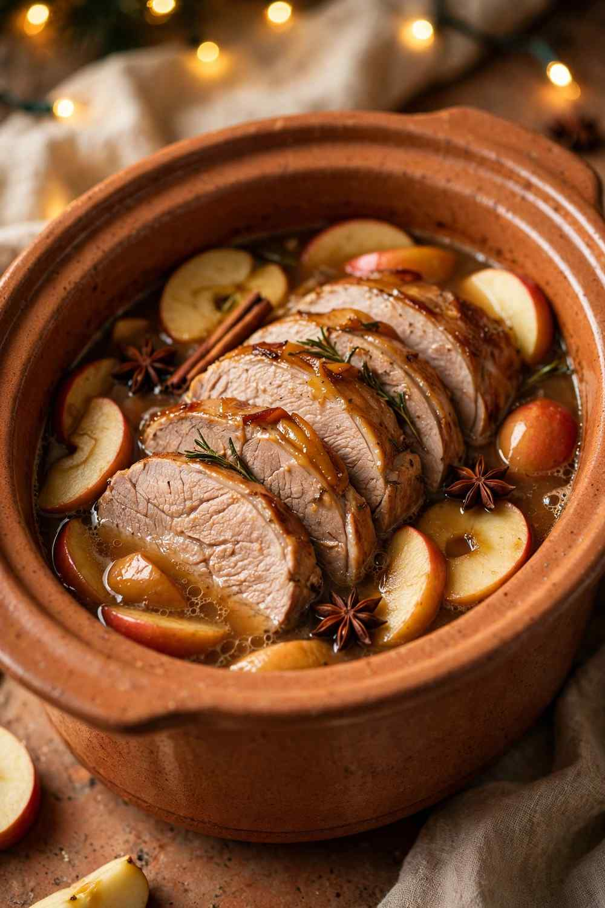
A pork loin rubbed with Dijon mustard and sage slow-cooks in sweet apple cider over a bed of apples, onion, and garlic until juicy and tender. The cider reduces into a fragrant, sweet cooking liquid, and the apples soften into a side dish. It is an autumnal main that tastes like Christmas and pairs with mashed potatoes or roasted vegetables.
Ingredients
- 1 pork loin (3 lbs)
- 2 cups apple cider
- 2 apples
- 1 onion
- 2 tbsp Dijon mustard
- 1 tsp sage
- 2 garlic cloves
Directions
- Pat the pork loin dry with paper towels, then rub it all over with the Dijon mustard, sage, salt, and pepper, pressing the seasoning into the meat.
- Core the apples and cut them into thick wedges, slice the onion, and mince the garlic cloves.
- Scatter the apples, onion, and garlic in an even layer across the bottom of the slow cooker.
- Set the seasoned pork loin on top of the apples and onion so it sits above the cooking liquid.
- Pour the apple cider around the sides of the pork, taking care not to wash the mustard rub off the top.
- Cover and cook on low for 5 hours, until the pork is tender and cooked through.
- Transfer the pork to a cutting board and rest 10 minutes, then slice thinly and serve with the apples and spoonfuls of the warm cider cooking liquid.
Food safety: cook the pork to 145°F (63°C) and let it rest for 3 minutes before slicing.
7. Slow Cooker Salmon in Creamy Dill Sauce
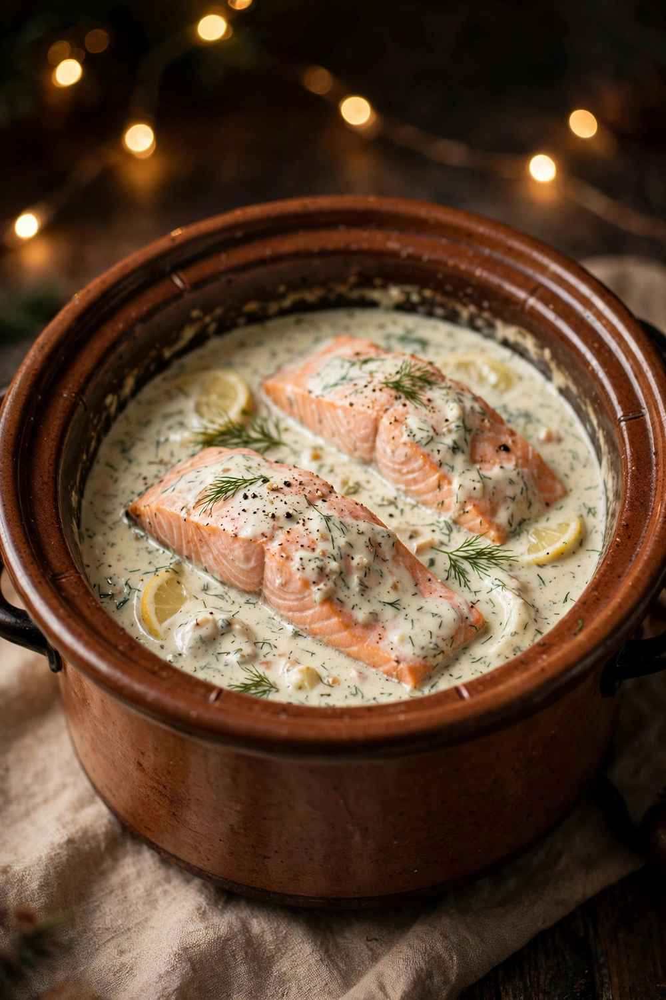
Salmon fillet cooks gently in the slow cooker under a creamy sauce of heavy cream, fresh dill, lemon juice, and garlic, staying moist and tender instead of drying out. The sauce turns silky and fragrant as it warms, and the dill gives it a fresh, herbal brightness. It is a light holiday main that is ready in two hours.
Ingredients
- 2 lbs salmon fillet
- 1 cup heavy cream
- 2 tbsp chopped dill
- 1 lemon
- 2 garlic cloves
- 1 tbsp butter
- salt and pepper
Directions
- Pat the salmon fillet dry with paper towels and season it generously on all sides with salt and pepper.
- Grease the inside of the slow cooker lightly with the butter so the fish does not stick.
- Place the seasoned salmon in the slow cooker in a single layer, skin side down if the fillet has skin.
- In a small bowl, whisk together the heavy cream, chopped dill, the juice of the lemon, and the minced garlic until smooth.
- Pour the cream mixture evenly over the salmon, letting it pool around the fillet.
- Cover with the lid and cook on low for 2 hours, keeping the lid on, until the flesh is opaque and flakes easily with a fork.
- Lift the salmon out carefully with a wide spatula, place it on a serving platter, and spoon the warm creamy dill sauce over the top before serving.
Food safety: cook the salmon to 145°F (63°C), or until the flesh is opaque and flakes easily.
8. Slow Cooker Shrimp and Sausage Jambalaya

Smoky sausage, long-grain rice, diced tomatoes, bell pepper, onion, and Cajun seasoning simmer together in chicken broth until the rice is tender and full of spice, then shrimp are stirred in at the end until just pink. It is a bold, crowd-feeding one-pot main with a little heat and a lot of flavor, perfect for a casual Christmas gathering.
Ingredients
- 1 lb shrimp
- 1 lb smoked sausage
- 2 cups long-grain rice
- 1 can (14 oz) diced tomatoes
- 1 bell pepper
- 1 onion
- 2 cups chicken broth
- 1 tbsp Cajun seasoning
Directions
- Slice the sausage into half-inch rounds and brown them in a large skillet over medium-high heat for about 5 minutes, until golden.
- Dice the bell pepper and onion, and peel and devein the shrimp if needed, then set them aside in the fridge.
- Add the browned sausage to the slow cooker with the rice, diced tomatoes with their juices, pepper, onion, chicken broth, and Cajun seasoning.
- Stir everything together well so the rice is evenly spread and covered by the broth.
- Cover and cook on low for 3 hours, until the rice is tender and has absorbed most of the liquid.
- Stir the shrimp into the hot rice, spreading them through the mixture, then replace the lid and cook for 20 more minutes until the shrimp are pink and opaque.
- Fluff the jambalaya with a fork, taste and adjust the salt, and serve hot straight from the slow cooker.
Food safety: cook the sausage to 160°F (71°C) and the shrimp until the flesh is pearly and opaque.
Soups that simmer all day
Start these in the morning and ladle them out when the table is set — rich, warming bowls for a cold Christmas night.
9. Slow Cooker Butternut Squash Soup
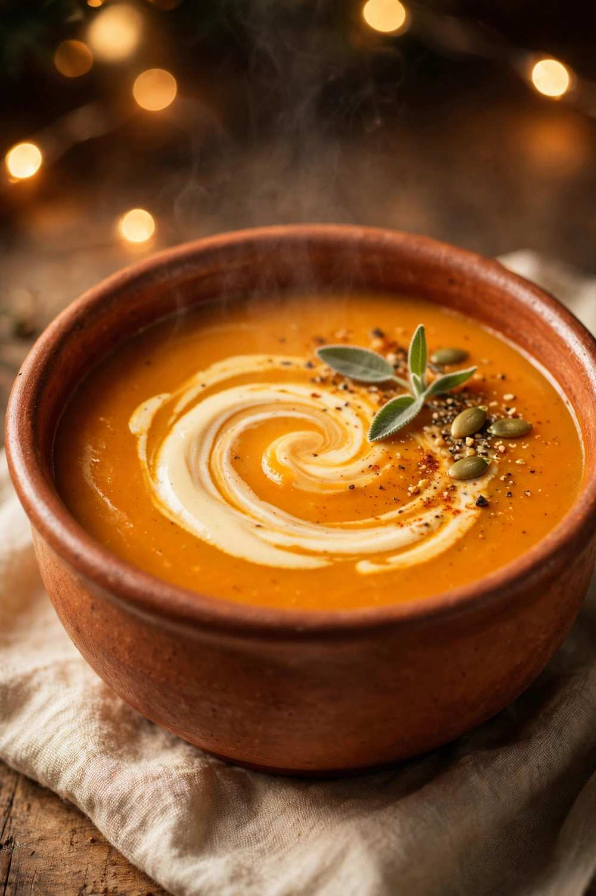
Butternut squash, onion, and carrots simmer all day in vegetable broth with cinnamon and nutmeg until everything is meltingly soft, then blend into a silky, golden soup finished with heavy cream. It is sweet, warmly spiced, and deeply comforting, the kind of bowl that makes a cold Christmas night feel cozy. Serve it warm with crusty bread.
Ingredients
- 1 butternut squash
- 1 onion
- 2 carrots
- 4 cups vegetable broth
- 1 tsp cinnamon
- 1/2 tsp nutmeg
- 1/2 cup heavy cream
Directions
- Peel the butternut squash, scoop out the seeds, and cut the flesh into roughly 1-inch cubes.
- Dice the onion and peel and slice the carrots into thick rounds.
- Add the squash, onion, and carrots to the slow cooker and pour in the vegetable broth.
- Stir in the cinnamon and nutmeg, mixing so the spices are spread through the broth.
- Cover with the lid and cook on low for 6 hours, keeping the lid on, until the squash and carrots are very soft and easily pierced with a fork.
- Blend the soup until completely smooth, either with an immersion blender right in the slow cooker or in batches in a regular blender, holding the lid down with a towel.
- Stir in the heavy cream until fully combined, taste and adjust the salt, and serve warm in bowls.
10. Slow Cooker Garlic Butter Chicken Thighs
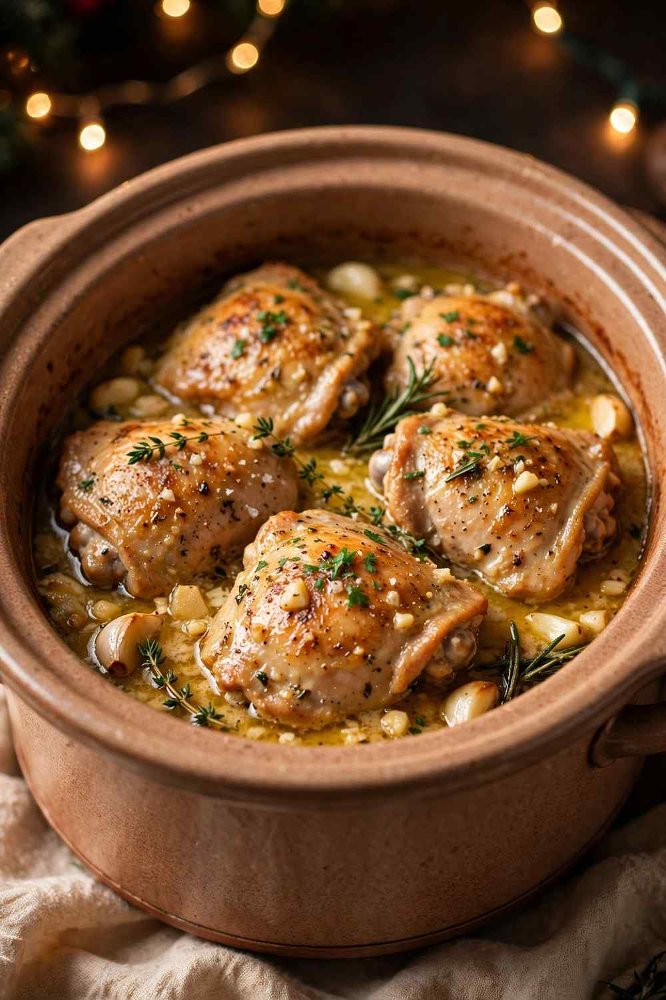
Bone-in chicken thighs seared until golden, then slow-cooked in a rich garlic butter sauce with thyme, chicken broth, and lemon juice until the meat is fall-apart tender. The butter melts into the cooking juices, making a sauce worth spooning over everything. It is a simple, deeply savory main that tastes far fancier than the effort it takes.
Ingredients
- 8 bone-in chicken thighs
- 4 tbsp butter
- 6 garlic cloves
- 1 tsp thyme
- 1/2 cup chicken broth
- juice of 1 lemon
- salt and pepper
Directions
- Pat the chicken thighs dry with paper towels and season them generously all over with salt and pepper.
- Heat a large skillet over medium-high heat with a drizzle of oil and brown the thighs skin side down first, about 4 to 5 minutes per side, until golden and crisp.
- Mince the garlic and melt the butter in a small saucepan over low heat, then stir in the garlic and thyme and cook for 1 minute until fragrant.
- Place the browned thighs in the slow cooker in a single layer, skin side up.
- Pour the garlic butter over the chicken, then pour in the broth and lemon juice around the sides.
- Cover and cook on low for 5 hours, until the chicken is very tender and the meat pulls easily from the bone.
- Spoon the warm garlic butter over each thigh before serving.
Food safety: cook the chicken to 165°F (74°C) — check with a food thermometer.
11. Slow Cooker Cheesy Potato Soup

Diced potatoes simmer in chicken broth with onion and garlic powder until soft, then get lightly mashed and stirred with shredded cheddar and heavy cream until the soup turns thick, velvety, and deeply cheesy. A scatter of fresh chives on top adds color and a mild onion bite. It is comfort in a bowl, perfect for a cold holiday evening.
Ingredients
- 6 potatoes
- 1 onion
- 4 cups chicken broth
- 2 cups shredded cheddar
- 1 cup heavy cream
- 1 tsp garlic powder
- chopped chives
Directions
- Peel the potatoes and cut them into even 1-inch cubes so they cook at the same rate.
- Dice the onion and add it to the slow cooker with the potatoes, chicken broth, and garlic powder.
- Stir everything together, then cover with the lid and cook on low for 6 hours, keeping the lid on, until the potatoes are very soft.
- Mash the potatoes lightly right in the slow cooker with a potato masher, leaving plenty of chunks for texture rather than making it completely smooth.
- Stir in the shredded cheddar a handful at a time, letting each handful melt before adding the next so the cheese blends in smoothly.
- Pour in the heavy cream and stir until the soup is thick, creamy, and evenly combined, then taste and adjust the salt and pepper.
- Ladle the soup into bowls and top each serving with a generous sprinkle of chopped chives.
12. Slow Cooker Beef and Barley Soup

Beef stew meat browns first for flavor, then simmers for hours with pearl barley, carrots, celery, onion, beef broth, tomato paste, and thyme until the beef is tender and the barley is soft and nutty. It is a hearty soup that warms you, ideal for a Christmas night when the house is full and the weather is cold.
Ingredients
- 1 lb beef stew meat
- 3/4 cup pearl barley
- 3 carrots
- 2 celery stalks
- 1 onion
- 6 cups beef broth
- 2 tbsp tomato paste
- 1 tsp thyme
Directions
- Pat the beef stew meat dry with paper towels and season it generously with salt and pepper.
- Heat a large skillet over medium-high heat with a drizzle of oil and brown the beef in batches, about 3 to 4 minutes per batch, until well browned on all sides.
- Peel and slice the carrots into thick rounds, slice the celery, and dice the onion.
- Add the browned beef to the slow cooker along with the barley, carrots, celery, and onion.
- Stir the tomato paste and thyme into the beef broth until smooth, then pour the mixture over the ingredients in the slow cooker.
- Cover with the lid and cook on low for 7 hours, keeping the lid on, until the beef is tender and the barley is soft and plump.
- Taste the soup and season with salt and pepper as needed, then ladle into bowls and serve hot.
Food safety: cook the beef to 145°F (63°C).
13. Slow Cooker Chicken Tortilla Soup
Chicken breasts simmer in a smoky, zesty broth of diced tomatoes, black beans, corn, onion, chili powder, and cumin until tender, then get shredded back into the pot. Crisp tortilla strips and fresh lime wedges on top add crunch and brightness. It is a bold, warming soup that brings a little Southwestern sunshine to the Christmas table.
Ingredients
- 2 chicken breasts
- 1 can (14 oz) diced tomatoes
- 1 can (15 oz) black beans
- 1 cup corn
- 1 onion
- 4 cups chicken broth
- 1 tbsp chili powder
- 1 tsp cumin
- tortilla strips
- lime
Directions
- Dice the onion and drain and rinse the black beans.
- Place the chicken breasts in the bottom of the slow cooker in a single layer.
- Add the diced tomatoes with their juices, black beans, corn, onion, chicken broth, chili powder, and cumin, stirring gently to combine.
- Cover with the lid and cook on low for 6 hours, keeping the lid on, until the chicken is cooked through and tender.
- Lift the chicken breasts out onto a cutting board and shred them with two forks, pulling the meat into bite-sized strips.
- Stir the shredded chicken back into the soup and let it warm through for 5 minutes.
- Ladle the soup into bowls and serve with a handful of tortilla strips on top and lime wedges on the side for squeezing over each bowl.
Food safety: cook the chicken to 165°F (74°C) — check with a food thermometer.
14. Slow Cooker Split Pea Soup with Ham

Dried split peas cook down for hours with smoky diced ham, carrots, celery, onion, thyme, and a bay leaf until the peas break apart into a thick, velvety soup. It is an old-fashioned, deeply satisfying bowl that tastes like a winter kitchen and uses up holiday ham beautifully. Stir it well and serve it hot with crusty bread.
Ingredients
- 1 lb dried split peas
- 2 cups diced ham
- 2 carrots
- 2 celery stalks
- 1 onion
- 6 cups chicken broth
- 1 tsp thyme
- 1 bay leaf
Directions
- Pour the dried split peas into a colander and rinse them well under cold running water, picking out any small stones or broken peas.
- Peel and dice the carrots, slice the celery, and dice the onion.
- Add the rinsed peas to the slow cooker along with the diced ham, carrots, celery, and onion.
- Pour in the chicken broth, then stir in the thyme and tuck the bay leaf into the middle of the pot.
- Cover with the lid and cook on low for 8 hours, keeping the lid on, until the peas have broken down and the soup is thick and creamy.
- Fish out the bay leaf and discard it, then stir the soup well, mashing any remaining whole peas against the side of the pot if you like it smoother.
- Taste and adjust the salt and pepper, then ladle into bowls and serve hot.
15. Slow Cooker Corn Chowder with Bacon
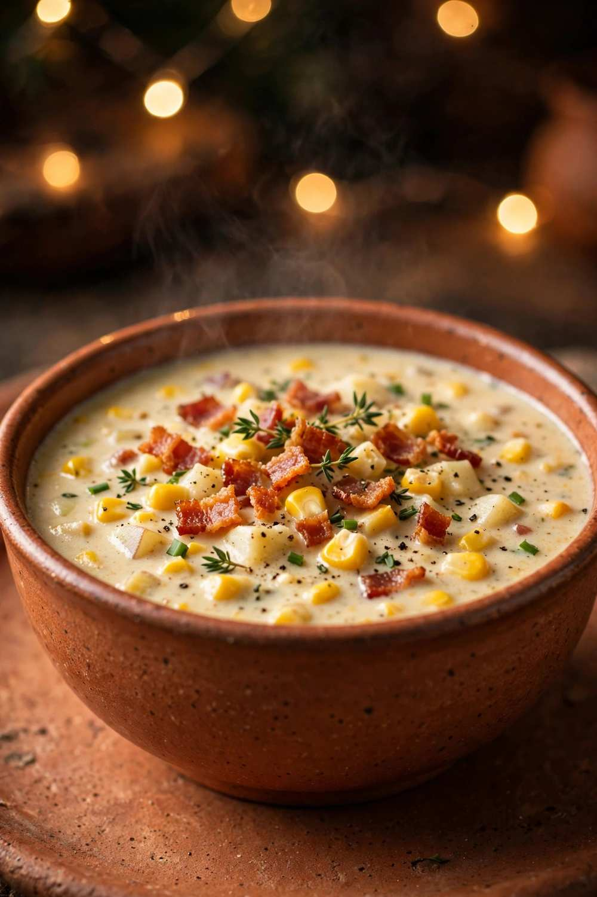
Sweet corn kernels and tender potatoes simmer in chicken broth with onion and thyme until soft, then get finished with heavy cream and smoky, crisp bacon. The chowder is creamy and sweet with a salty, smoky edge, and the bacon on top stays crunchy. It is a cozy, crowd-pleasing soup that tastes like the holidays in a bowl.
Ingredients
- 4 cups corn kernels
- 4 potatoes
- 6 slices bacon
- 1 onion
- 4 cups chicken broth
- 1 cup heavy cream
- 1 tsp thyme
Directions
- Cook the bacon in a large skillet over medium heat until crisp, about 8 minutes, turning the slices once so they brown evenly.
- Transfer the bacon to a paper towel-lined plate to drain, then crumble it into small pieces and set it aside.
- Peel the potatoes and cut them into even 1-inch cubes, and dice the onion.
- Add the corn, potatoes, onion, chicken broth, and thyme to the slow cooker and stir to combine.
- Cover with the lid and cook on low for 6 hours, keeping the lid on, until the potatoes are very tender.
- Stir in the heavy cream and half of the crumbled bacon, letting the soup warm through for 5 minutes.
- Ladle the chowder into bowls and top each serving with the remaining crumbled bacon before serving.
Food safety: cook the bacon until crisp.

Sides from the slow cooker
Green beans, creamed corn, mac and cheese and more — sides that cook themselves while the oven stays free.
16. Slow Cooker Green Beans with Bacon and Brown Sugar
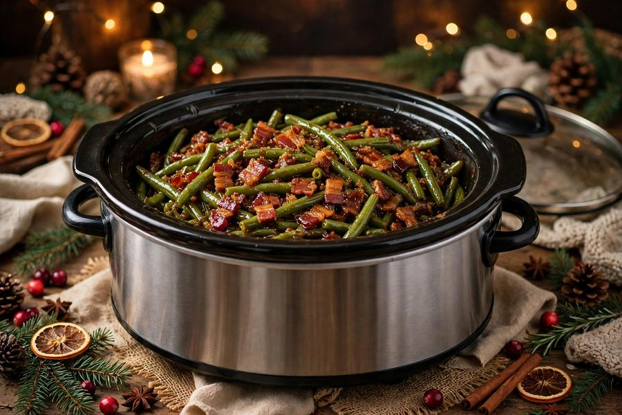
Fresh green beans slow-cook with onion, butter, and brown sugar until tender and glossy, then get tossed with crisp, crumbled bacon just before serving. The brown sugar caramelizes lightly around the beans, giving them a sweet-savory glaze that balances the smoky bacon. It is a simple side that disappears fast from the holiday table.
Ingredients
- 2 lbs green beans
- 6 slices bacon
- 1/2 cup brown sugar
- 2 tbsp butter
- 1 onion
- salt and pepper
Directions
- Trim the ends off the green beans and cut any very long beans in half so they fit easily in the slow cooker.
- Cook the bacon in a large skillet over medium heat until crisp, about 8 minutes, turning the slices once so they brown evenly.
- Transfer the bacon to a paper towel-lined plate to drain, then crumble it into small pieces and set it aside.
- Dice the onion and add it to the slow cooker with the green beans, butter, and brown sugar.
- Season with salt and pepper and toss everything together so the beans are coated in the sugar and butter.
- Cover with the lid and cook on low for 4 hours, keeping the lid on, until the beans are tender but still have a little bite.
- Stir in the crumbled bacon just before serving so it stays crisp, then transfer to a serving dish and serve warm.
Food safety: cook the bacon until crisp.
17. Slow Cooker Creamed Corn

Sweet corn kernels cook low and slow in a rich sauce of cream cheese, heavy cream, butter, and a touch of sugar until everything melts together into a velvety, sweet side dish. It is creamy, comforting, and almost effortless, the kind of side that pairs with anything on the Christmas table and pleases kids and adults alike.
Ingredients
- 4 cups corn kernels
- 8 oz cream cheese
- 1/2 cup heavy cream
- 2 tbsp butter
- 1 tbsp sugar
- salt and pepper
Directions
- Cut the cream cheese into small cubes so it melts evenly, and cut the butter into pieces.
- Add the corn kernels to the slow cooker along with the cream cheese cubes, heavy cream, butter, and sugar.
- Stir everything together so the corn is coated and the cream cheese is spread through the mixture.
- Cover with the lid and cook on low for 3 hours, keeping the lid on so the slow cooker stays hot.
- Stir the corn once halfway through cooking, scraping the sides and bottom, so the sauce stays smooth and nothing sticks.
- When the time is up, stir the corn well until the sauce is thick, creamy, and evenly combined.
- Season with salt and pepper to taste, then serve warm straight from the slow cooker or in a serving dish.
18. Slow Cooker Mac and Cheese
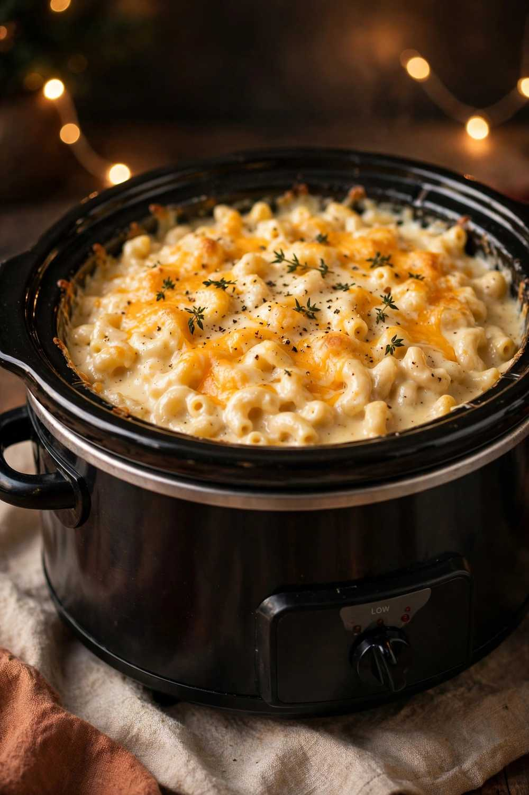
Elbow macaroni cooks right in the slow cooker with shredded cheddar, milk, evaporated milk, butter, and a pinch of mustard powder until the pasta is tender and the sauce turns extra creamy. There is no boiling, no draining, and no extra pot, just one dish of golden, cheesy comfort. Serve it as soon as the sauce is creamy.
Ingredients
- 16 oz elbow macaroni
- 3 cups shredded cheddar
- 2 cups milk
- 1 cup evaporated milk
- 4 tbsp butter
- 1/2 tsp mustard powder
- salt and pepper
Directions
- Grease the inside of the slow cooker lightly with butter or cooking spray so the pasta does not stick.
- Add the elbow macaroni, shredded cheddar, milk, evaporated milk, butter, and mustard powder to the slow cooker.
- Stir everything together well so the macaroni is evenly coated and the cheese is spread through the liquid.
- Cover with the lid and cook on low for 2 hours, keeping the lid on between stirs so the slow cooker stays hot.
- Stir the macaroni twice during cooking, about once every 40 minutes, scraping the sides so the pasta cooks evenly and the sauce stays smooth.
- When the pasta is tender and the sauce is thick and creamy, taste and season with salt and pepper.
- Serve at once, while the sauce is hot and creamy, spooning it straight from the slow cooker into bowls.
19. Slow Cooker Mashed Carrots and Parsnips

Carrots and parsnips cook until soft in the slow cooker with butter and a splash of water, then mash with heavy cream and a drizzle of honey into a sweet, buttery, golden mash. It is smoother and sweeter than plain mashed potatoes, with an earthy note from the parsnips, and it looks beautiful beside a roast on the Christmas table.
Ingredients
- 4 carrots
- 4 parsnips
- 4 tbsp butter
- 1/4 cup heavy cream
- 1 tsp honey
- salt and pepper
Directions
- Peel the carrots and parsnips and cut them into even 1-inch pieces so they cook at the same rate.
- Add the carrots and parsnips to the slow cooker along with the butter and a splash of water, just enough to keep the bottom moist.
- Cover with the lid and cook on low for 4 hours, keeping the lid on, until the vegetables are very soft and easily pierced with a fork.
- Drain off any excess liquid left in the slow cooker so the mash does not turn watery.
- Add the cream and honey, then mash everything with a potato masher until smooth and creamy, adding a little more cream if needed.
- Taste and season generously with salt and pepper, stirring until the seasoning is evenly mixed through.
- Spoon the mash into a warm serving dish and serve hot, with a small pat of butter on top if you like.
20. Slow Cooker Brussels Sprouts with Maple and Bacon

Halved Brussels sprouts slow-cook in maple syrup, butter, and balsamic vinegar until tender and glazed, then get tossed with crisp, crumbled bacon. The maple brings sweetness, the vinegar adds a bright tang, and the bacon adds smoke and salt, turning a vegetable many people skip into one of the best sides on the table.
Ingredients
- 2 lbs Brussels sprouts
- 6 slices bacon
- 1/4 cup maple syrup
- 2 tbsp butter
- 1 tbsp balsamic vinegar
- salt and pepper
Directions
- Trim the tough stem ends off the Brussels sprouts and peel away any yellowed outer leaves, then cut each sprout in half through the stem.
- Cook the bacon in a large skillet over medium heat until crisp, about 8 minutes, turning once so the slices brown evenly.
- Transfer the bacon to a paper towel-lined plate to drain, then crumble it into small pieces and set it aside.
- Add the halved sprouts to the slow cooker with the maple syrup, butter, and balsamic vinegar, tossing so they are evenly coated.
- Season with salt and pepper, then cover and cook on low for 3 hours, until the sprouts are tender and glazed.
- Stir the sprouts so the maple glaze coats them evenly, then taste and adjust the salt and pepper.
- Stir in the crumbled bacon just before serving so it stays crisp, then serve warm.
Food safety: cook the bacon until crisp.
Desserts and sweet finishes
Pear sauce, apple butter, bread pudding and lava cake — sweet endings that need no oven at all.
21. Slow Cooker Spiced Pear Sauce

Fresh pears cook down with sugar, cinnamon, ginger, and lemon juice until soft and spoonable, then get mashed lightly and finished with vanilla. The sauce is warmly spiced and gently sweet, with a soft, rustic texture that works over ice cream, yogurt, or oatmeal. Serve it warm or chilled as a simple, fragrant finish to the holiday meal.
Ingredients
- 6 pears
- 1/2 cup sugar
- 1 tsp cinnamon
- 1/2 tsp ginger
- 1 tbsp lemon juice
- 1 tsp vanilla
Directions
- Peel the pears, cut them into quarters, and remove the cores, then chop the flesh into roughly 1-inch pieces.
- Add the chopped pears to the slow cooker along with the sugar, cinnamon, ginger, and lemon juice.
- Stir everything together well so the pears are evenly coated in the sugar and spices.
- Cover with the lid and cook on low for 4 hours, keeping the lid on, until the pears are very soft and easily crushed with a spoon.
- Mash the pears lightly with a potato masher or fork, leaving the sauce a little chunky for a rustic texture.
- Stir in the vanilla until fully mixed through, then taste and add a little more sugar if the pears are very tart.
- Serve the pear sauce warm or let it cool and chill it in the fridge, spooning it over ice cream, yogurt, or oatmeal.
22. Slow Cooker Apple Butter

Six pounds of apples cook for ten hours with sugar, cinnamon, nutmeg, and cloves until they collapse into a deep, dark, spiced spread, finished with vanilla and blended smooth. It is thick enough to stand a spoon in, with a concentrated apple flavor that tastes like autumn. Cool it and store it in jars for toast, biscuits, or holiday gifts.
Ingredients
- 6 lbs apples
- 2 cups sugar
- 2 tsp cinnamon
- 1/2 tsp nutmeg
- 1/4 tsp cloves
- 1 tbsp vanilla
Directions
- Peel the apples, cut them into quarters, and remove the cores, then slice the flesh into thin pieces so they cook down evenly.
- Add the sliced apples to the slow cooker along with the sugar, cinnamon, nutmeg, and cloves.
- Stir everything together well so the apples are evenly coated in the sugar and spices.
- Cover with the lid and cook on low for 10 hours, keeping the lid on between stirs so the slow cooker stays hot.
- Stir the apples once during cooking, about halfway through, scraping the sides so nothing sticks and the mixture cooks evenly.
- When the apples are dark, soft, and reduced, blend the mixture until completely smooth, either with an immersion blender or in batches in a regular blender.
- Stir in the vanilla, let the apple butter cool completely, then spoon it into clean jars, seal, and store in the fridge.
23. Slow Cooker Gingerbread Bread Pudding

Cubes of gingerbread soak in a custard of eggs, milk, brown sugar, vanilla, and cinnamon with plump raisins, then slow-cook until set and custardy in the middle. The gingerbread keeps its warm spice while the custard turns it soft and rich. Serve it warm with cream for a dessert that tastes like Christmas in a spoon.
Ingredients
- 8 cups cubed gingerbread
- 4 eggs
- 2 cups milk
- 1/2 cup brown sugar
- 1 tsp vanilla
- 1 tsp cinnamon
- 1/2 cup raisins
Directions
- Grease the inside of the slow cooker well with butter or cooking spray so the pudding does not stick.
- In a large bowl, whisk together the eggs, milk, brown sugar, vanilla, and cinnamon until smooth and fully combined.
- Place the gingerbread cubes and raisins in the greased slow cooker and toss them together so the raisins are spread evenly through the bread.
- Pour the custard evenly over the gingerbread, then press the cubes down gently with a spatula so they all absorb the liquid.
- Cover with the lid and cook on low for 3 hours, keeping the lid on, until the custard is set in the center and no longer jiggles when you shake the pot gently.
- Let the pudding rest with the lid off for 10 minutes so it firms up slightly.
- Spoon the warm pudding into bowls and serve with cream poured over the top.
Food safety: cook until the eggs are set — egg dishes should reach 160°F (71°C).
24. Slow Cooker Chocolate Lava Cake
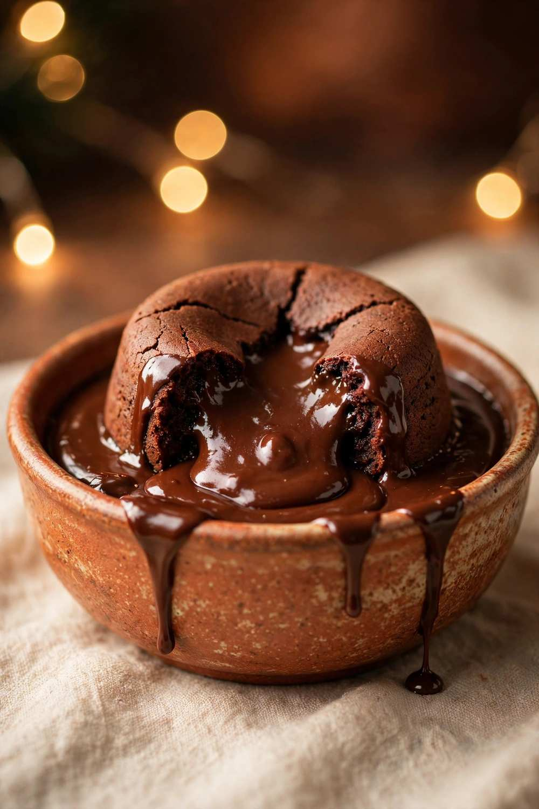
Chocolate cake batter cooks under a layer of chocolate pudding and chocolate chips until the edges set into soft cake while the center stays molten and gooey. It is a no-oven dessert that feels like magic when you spoon into it and the chocolate runs out. Serve it warm, straight from the slow cooker, with ice cream if you like.
Ingredients
- 1 box chocolate cake mix
- 3 eggs
- 1/2 cup oil
- 1 cup water
- 1 box (3.9 oz) chocolate pudding mix
- 2 cups milk
- 1 cup chocolate chips
Directions
- Grease the inside of the slow cooker well with butter or cooking spray so the cake does not stick.
- In a large bowl, whisk the chocolate cake mix, eggs, oil, and water until smooth, with no dry streaks left.
- Pour the cake batter into the greased slow cooker and spread it into an even layer with a spatula.
- In a second bowl, whisk the chocolate pudding mix with the milk until smooth and slightly thickened.
- Pour the pudding mixture gently over the cake batter, taking care not to stir the two layers together.
- Sprinkle the chocolate chips evenly over the top of the pudding layer.
- Cover and cook on low for 3 hours, until the edges are set and springy while the center stays soft and gooey.
- Spoon the warm cake into bowls, making sure each serving gets some gooey center, and serve at once.
Food safety: cook until the edges are set — egg dishes should reach 160°F (71°C).
25. Slow Cooker Rice Pudding with Cinnamon

Arborio rice simmers in a sweet custard of milk, eggs, sugar, vanilla, and cinnamon with plump raisins until the grains turn tender and the pudding thickens into a creamy, old-fashioned dessert. It is gently spiced and deeply comforting, the kind of spoon dessert that ends a holiday meal softly. Serve it warm, dusted with cinnamon.
Ingredients
- 1 cup arborio rice
- 4 cups milk
- 2 eggs
- 1/2 cup sugar
- 1 tsp vanilla
- 1 tsp cinnamon
- 1/2 cup raisins
Directions
- Grease the inside of the slow cooker well with butter or cooking spray so the rice does not stick.
- In a large bowl, whisk together the milk, eggs, sugar, vanilla, and cinnamon until smooth and fully combined.
- Add the arborio rice and raisins to the greased slow cooker and spread them in an even layer.
- Pour the milk and egg mixture over the rice and raisins, stirring gently to combine.
- Cover and cook on low for 3 hours, keeping the lid on between stirs.
- Stir the pudding twice during cooking, about once an hour, scraping the sides and bottom so the rice cooks evenly and does not stick.
- When the rice is tender and the pudding is thick and creamy, taste and adjust the sweetness.
- Spoon the pudding into bowls and serve warm, dusted with a little extra cinnamon over the top.
Food safety: cook until the eggs are set — egg dishes should reach 160°F (71°C).
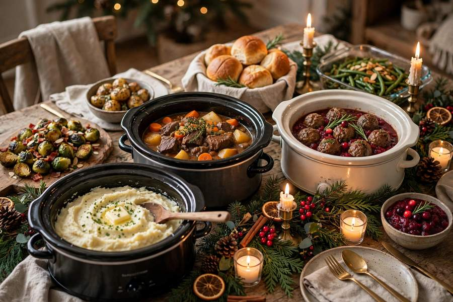
Make-ahead & serving tips
Most of these recipes hold beautifully on the slow cooker's warm setting for an hour or two, so time dinner around your guests, not the other way around. Brown meats before they go in when the recipe calls for it — that sear is where the flavor comes from. Keep the lid on while cooking; every peek lets heat escape and adds cooking time. Leftovers keep covered in the fridge for up to 3 days — reheat soups and braises gently on the stove, and warm sliced ham and turkey in a little of their cooking liquid so they stay juicy.
Related articles
More roundups from the same table:
- 25+ Christmas Side Dishes for Your Holiday Table — roasted vegetables, creamy potatoes, stuffing and cranberry sauce.
- 20+ New Year's Eve Dinner Ideas for Family and Friends — festive mains, from roast beef and salmon to pasta and slow cooker favorites.
- 25+ Christmas Pie Recipes for a Sweet Holiday Table — classic apple, pumpkin and pecan pies plus festive tarts and hand pies for Christmas Day.
- 25+ Easy New Year's Eve Appetizers for a Crowd — bite-size party snacks, dips and finger foods for ringing in the New Year.
Keep exploring
- Browse the Lunch & Dinner roundups — mains and sides for midday and evening tables.
- Browse all six categories — breakfast, lunch and dinner, desserts, air fryer, healthy recipes, and appetizers.
- More about the kitchen — what The Tasty Recipe Co is and how it works.
About The Tasty Recipe Co: Learn how we research, organize and review our food collections — see our About Us and Editorial Policy pages.
Recipe results can vary with ingredients, equipment, and technique. See our Disclaimer for food-safety and allergy notes.